What's new in Phase 4c. C1 extends_city_scale_fallbackto fire when the affine fit fails at themin_gcpsormin_rmsegate AND a title-derived lat/lon is available — promoting routes that previously hard-failed to a decorative city-scale ship. C2 adds a per-routetotal_distance_m(snapped polyline length for street-scale, per-segment haversine sum for city-scale). C3 rebuilds this dashboard with KPI tiles, a distance column, sortable columns, and a sticky header.
| # | Title | Verdict | Distance | Conf | Phase 4a | Phase 4b | Phase 4c | Thumbnail | Notes |
|---|---|---|---|---|---|---|---|---|---|
| 910 | The London Marathon | SHIP | 6.4 km | 0.60 | SHIP (0.60) | SHIP-strict (0.60, kind=street) | SHIP-strict (0.60, kind=street) | 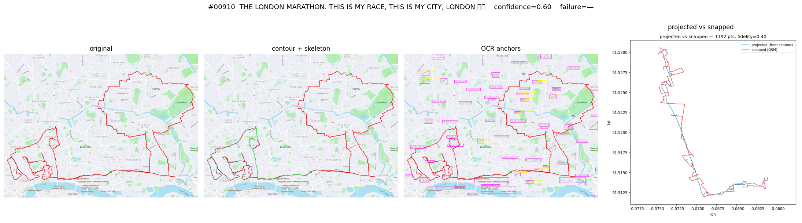 | unchanged through 4a→4b→4c. NOTE: GPX length << canonical 42.2km — the snap traced only a fragment of the cartoon path (Phase 3 known limitation, surfaced in Stream A/B follow-ups). |
| 921 | The Hackney Horse | SHIP | 11.7 km | 0.62 | SHIP (0.62) | SHIP-strict (0.62, kind=street) | SHIP-strict (0.62, kind=street) | 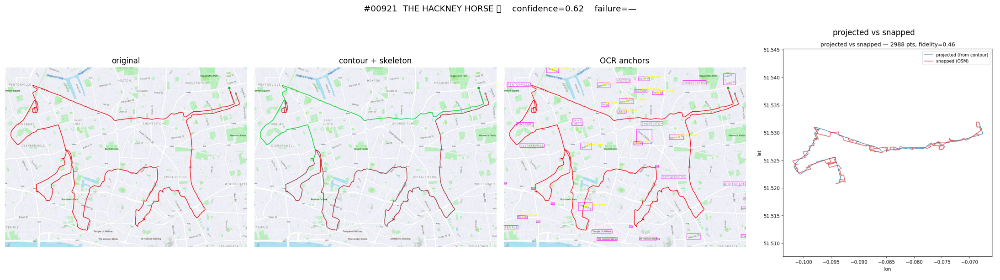 | animal-shape route in dense central London. |
| 53 | Regent's Park, Great Day For Doggin | REVIEW | 17.0 km | 0.58 | FAIL-CONF (0.58<0.60) | REVIEW (0.58, kind=street) | REVIEW (0.58, kind=street) | 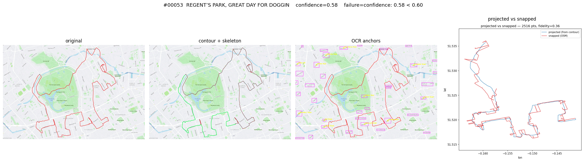 | was silently dropped pre-4b; now reviewable. Distance from Phase 4b sweep_00053.json baseline. |
| 584 | Travelling Elephant | REVIEW | 18.8 km | 0.50 | FAIL-CONF (0.50<0.60) | REVIEW (0.50, kind=street) | REVIEW (0.50, kind=street) | 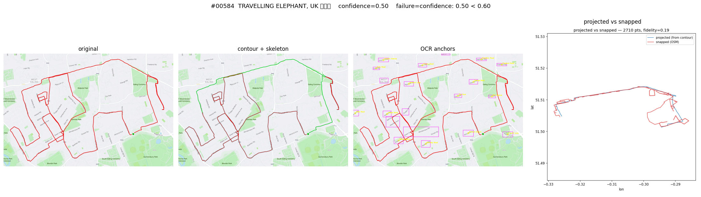 | trunk takes wrong turn (Dijkstra picks shortest, not shape-best); see Stream A's HMM work. Distance from sweep_00584.json baseline. |
| 5 | Manchester Dog | CITY-SCALE | 21.9 km | 0.50 | FAIL-EARLY (OCR0) | CITY-SCALE (0.50, kind=city-scale) | CITY-SCALE (conf 0.50, decorative) | 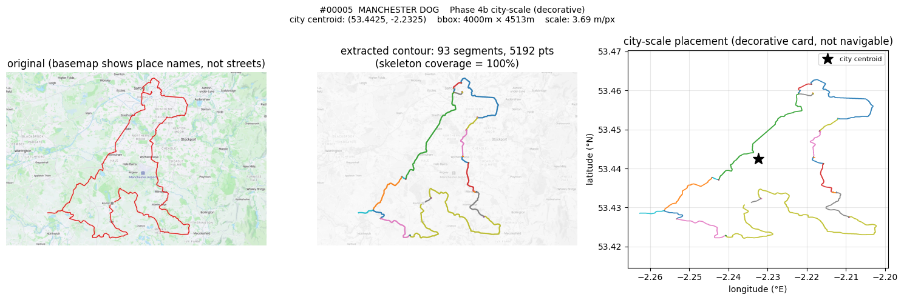 | city-scale ship via Phase 4b OCR0 fallback (unchanged in 4c) |
| 30 | Vienna Doggo | CITY-SCALE | 17.4 km | 0.50 | FAIL-EARLY (OCR0) | CITY-SCALE (0.50, kind=city-scale) | CITY-SCALE (conf 0.50, decorative) | 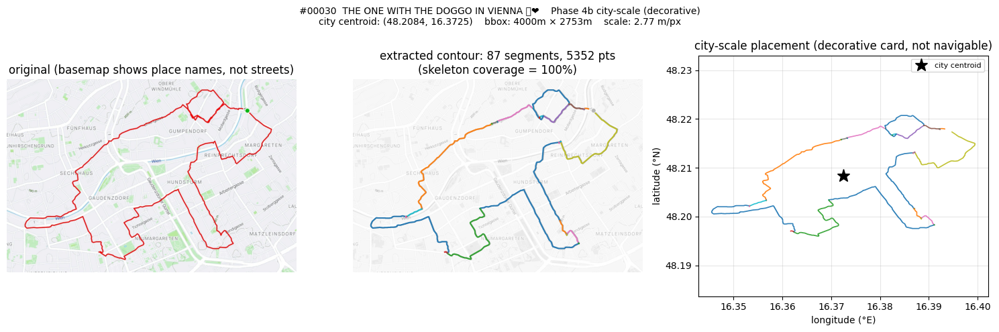 | city-scale ship via Phase 4b OCR0 fallback (unchanged in 4c) |
| 208 | Berlin Mutt | CITY-SCALE | 21.0 km | 0.50 | FAIL-EARLY (OCR0) | CITY-SCALE (0.50, kind=city-scale) | CITY-SCALE (conf 0.50, decorative) | 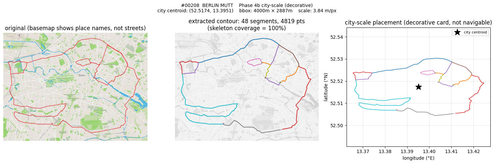 | city-scale ship via Phase 4b OCR0 fallback (unchanged in 4c) |
| 248 | 1st Berlin Drawing | CITY-SCALE | 29.1 km | 0.50 | FAIL-EARLY (OCR0) | CITY-SCALE (0.50, kind=city-scale) | CITY-SCALE (conf 0.50, decorative) | 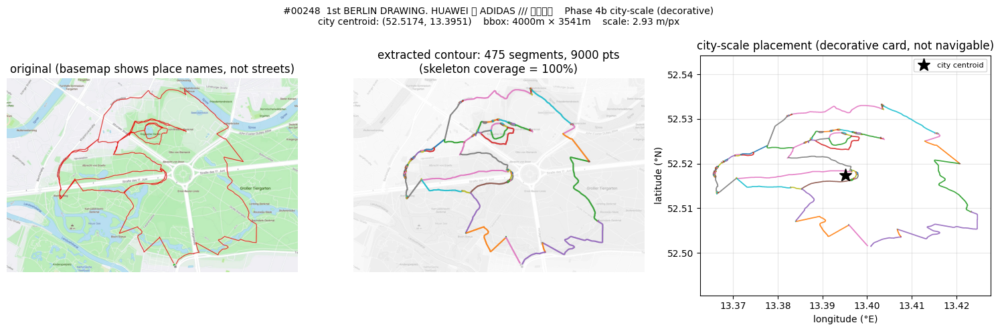 | city-scale ship via Phase 4b OCR0 fallback (unchanged in 4c) |
| 799 | Bullfight in Munich | CITY-SCALE | 25.1 km | 0.50 | FAIL-EARLY (OCR0) | CITY-SCALE (0.50, kind=city-scale) | CITY-SCALE (conf 0.50, decorative) | 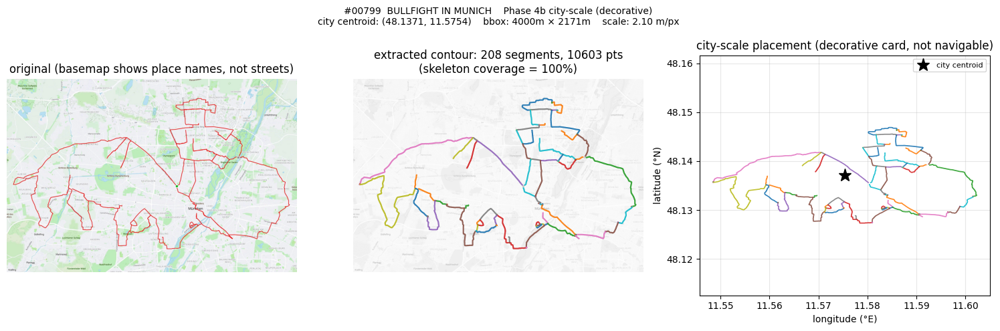 | city-scale ship via Phase 4b OCR0 fallback (unchanged in 4c) |
| 800 | Munich Lion | CITY-SCALE | 25.3 km | 0.50 | FAIL-EARLY (OCR0) | CITY-SCALE (0.50, kind=city-scale) | CITY-SCALE (conf 0.50, decorative) | 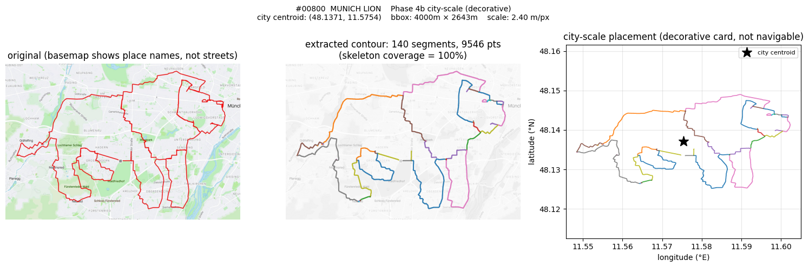 | city-scale ship via Phase 4b OCR0 fallback (unchanged in 4c) |
| 1135 | Rotterdam Has Added Two Turtles | CITY-SCALE | 14.8 km | 0.50 | FAIL-EARLY (OCR0) | CITY-SCALE (0.50, kind=city-scale) | CITY-SCALE (conf 0.50, decorative) | 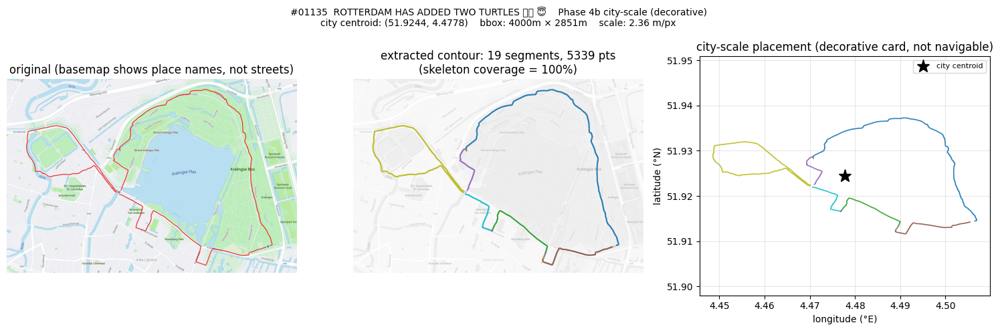 | city-scale ship via Phase 4b OCR0 fallback (unchanged in 4c) |
| 1359 | Amsterdam is Ajax | CITY-SCALE | 38.5 km | 0.50 | FAIL-EARLY (OCR0) | CITY-SCALE (0.50, kind=city-scale) | CITY-SCALE (conf 0.50, decorative) | 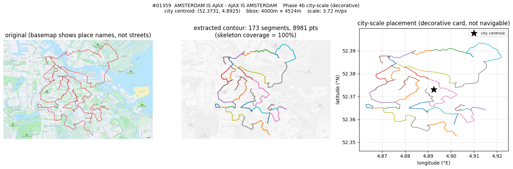 | city-scale ship via Phase 4b OCR0 fallback (unchanged in 4c) |
| 1565 | Strava Logo in Hamburg | CITY-SCALE | 21.9 km | 0.50 | FAIL-EARLY (OCR0) | CITY-SCALE (0.50, kind=city-scale) | CITY-SCALE (conf 0.50, decorative) | 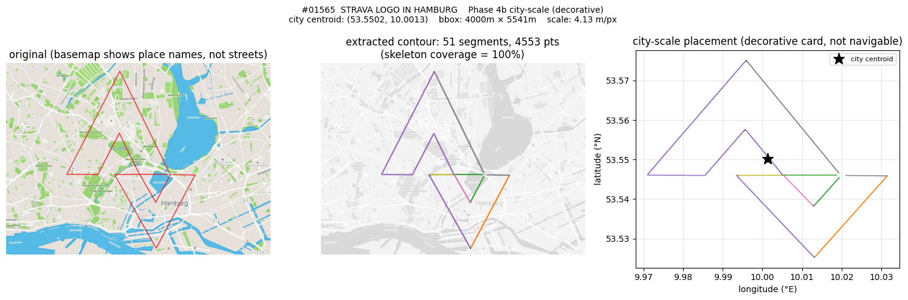 | city-scale ship via Phase 4b OCR0 fallback (unchanged in 4c) |
| 577 | Dumbo Visits Cambridge | CITY-SCALE-NEW | 23.0 km | 0.50 | FAIL-CONF or FAIL-EARLY | FAIL min_gcps (3<5) | CITY-SCALE-NEW (conf 0.50, decorative) | 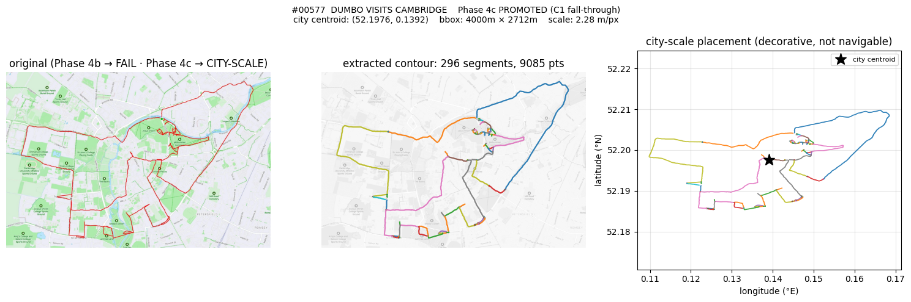 | NEW in 4c: C1 fall-through promoted from fail → decorative |
| 942 | London Bear Half Marathon | CITY-SCALE-NEW | 29.9 km | 0.50 | FAIL-CONF or FAIL-EARLY | FAIL-conf (0.31<0.4) — degenerate | CITY-SCALE-NEW (conf 0.50, decorative) | 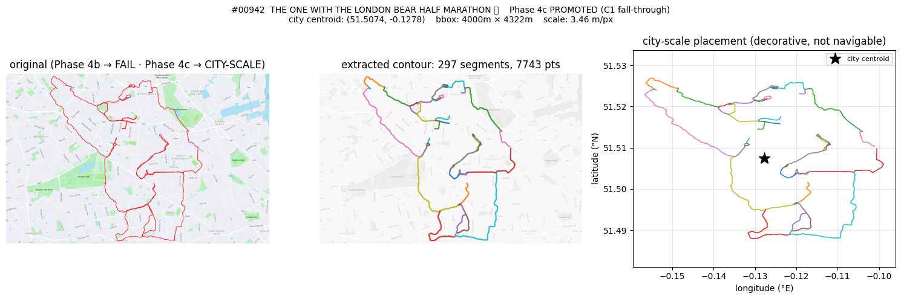 | NEW in 4c: C1 fall-through promoted from fail → decorative |
| 1272 | St Albans Shark | CITY-SCALE-NEW | 15.4 km | 0.50 | FAIL-CONF or FAIL-EARLY | FAIL min_gcps (4<5) | CITY-SCALE-NEW (conf 0.50, decorative) | 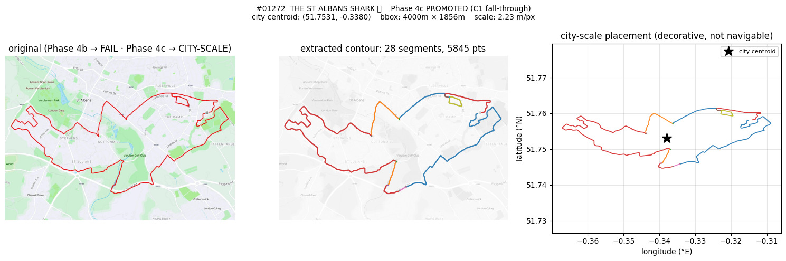 | NEW in 4c: C1 fall-through promoted from fail → decorative |
| 36 | 100k GPS Art Tour of West Devon | FAIL | — | — | FAIL-EARLY (OCR0) | FAIL no-title-latlon | FAIL no-title-latlon | 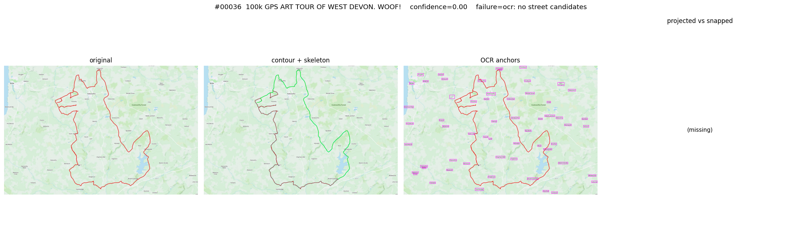 | Phase 1 couldn't geocode 'West Devon'; no anchor to fall back on. |
| 60 | Doggin' My Way Through Hampstead Heath | FAIL | — | 0.28 | FAIL-CONF (0.28) | FAIL-conf (0.28<0.4) | FAIL no-title-latlon | 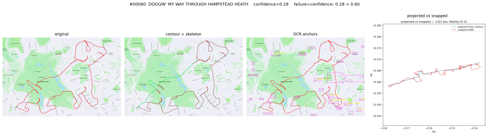 | C1 fall-through would have caught this, BUT Phase 1 has lat=None for it — needs an upstream geocode pass. |
| 1294 | A Whale in Wales | FAIL | — | 0.24 | FAIL-CONF (0.24) | FAIL min_gcps (3<5) | FAIL no-title-latlon | 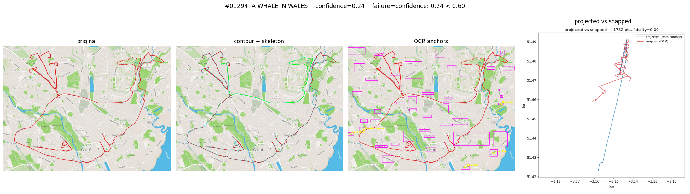 | 'Wales' too broad for triangulation; Phase 1 lat=None blocks C1 fall-through. |
| 1333 | Paris GPS Drawing | FAIL | — | — | FAIL-XREF (1 candidate) | FAIL-XREF (1 candidate) | FAIL-XREF (1 candidate) | 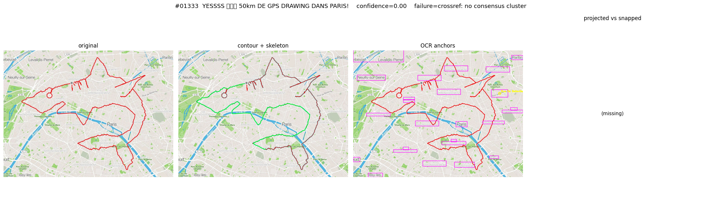 | C1 fall-through fires on min_gcps/min_rmse fail, NOT on crossref-no-consensus. Known gap. |
min_gcps / min_rmse gate.lat=NULL
— C1's fall-through correctly requires a title centroid, so closing
this last gap is upstream geocoder work.